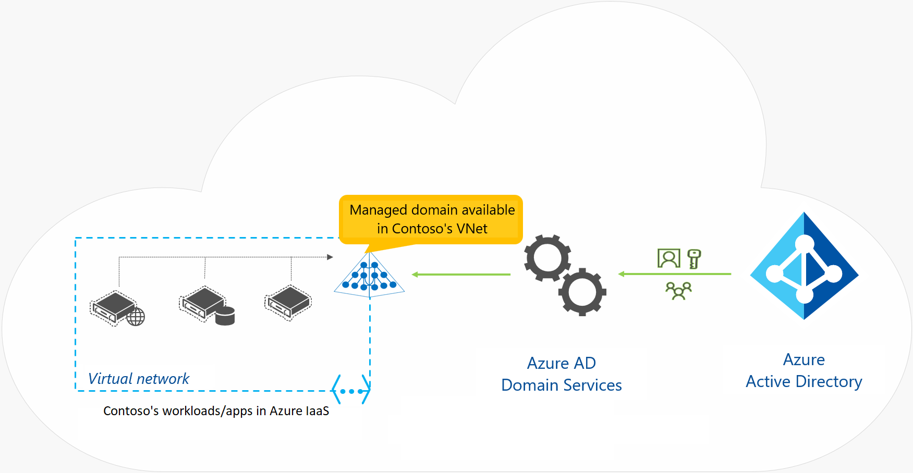

In most organizations today, line-of-business (LOB) applications are deployed on computers and devices that are domain members. These organizations use AD DS–based credentials for authentication, and Group Policy manages them. When you consider moving these apps to run in Azure, one key issue is how to provide authentication services to these apps. To satisfy this need, you can choose to implement a site-to-site virtual private network (VPN) between your local infrastructure and the Azure IaaS, or you can deploy replica domain controllers from your local AD DS as virtual machines (VMs) in Azure. These approaches can entail additional costs and administrative effort. Additionally, the difference between these two approaches is that with the first option, authentication traffic will cross the VPN, while in the second option, replication traffic will cross the VPN and authentication traffic stays in the cloud.
Microsoft provides Microsoft Entra Domain Services as an alternative to these approaches. This service, which runs as part of the Microsoft Entra ID P1 or P2 tier, provides domain services such as Group Policy management, domain joining, and Kerberos authentication to your Microsoft Entra tenant. These services are fully compatible with locally deployed AD DS, so you can use them without deploying and managing additional domain controllers in the cloud.

Because Microsoft Entra ID can integrate with your local AD DS, when you implement Microsoft Entra Connect, users can utilize organizational credentials in both on-premises AD DS and in Microsoft Entra Domain Services. Even if you don’t have AD DS deployed locally, you can choose to use Microsoft Entra Domain Services as a cloud-only service. This enables you to have similar functionality of locally deployed AD DS without having to deploy a single domain controller on-premises or in the cloud. For example, an organization can choose to create a Microsoft Entra tenant and enable Microsoft Entra Domain Services, and then deploy a virtual network between its on-premises resources and the Microsoft Entra tenant. You can enable Microsoft Entra Domain Services for this virtual network so that all on-premises users and services can use domain services from Microsoft Entra ID.
Microsoft Entra Domain Services provides several benefits for organizations, such as:
- Administrators don't need to manage, update, and monitor domain controllers.
- Administrators don't need to deploy and manage Active Directory replication.
- There’s no need to have Domain Admins or Enterprise Admins groups for domains that Microsoft Entra ID manages.
If you choose to implement Microsoft Entra Domain Services, you need to be aware of the service's current limitations. These include:
- Only the base computer Active Directory object is supported.
- It’s not possible to extend the schema for the Microsoft Entra Domain Services domain.
- The organizational unit (OU) structure is flat and nested OUs aren't currently supported.
- There’s a built-in Group Policy Object (GPO), and it exists for computer and user accounts.
- It’s not possible to target OUs with built-in GPOs. Additionally, you can't use Windows Management Instrumentation filters or security-group filtering.
By using Microsoft Entra Domain Services, you can freely migrate applications that use LDAP, NTLM, or the Kerberos protocols from your on-premises infrastructure to the cloud. You can also use applications such as Microsoft SQL Server or Microsoft SharePoint Server on VMs or deploy them in the Azure IaaS, without needing domain controllers in the cloud or a VPN to local infrastructure.
You can enable Microsoft Entra Domain Services by using the Azure portal. This service charges per hour based on the size of your directory.